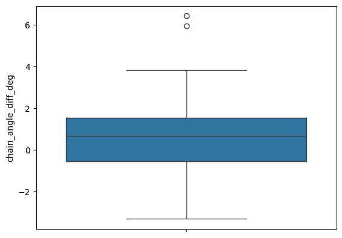

Centre of mass analysis
Introduction
In this notebook we aimed to identify the centre-of-mass (COM) of the TCR framework (Fw) regions and the anchors of the CDR loops. We then investigated the amount of movement these regions undergo between apo and holo states. We also used these COMs to create an axis of the TCR and measure the angle between both chains of the TCR before determining the angle changes between apo and holo states.
[1]:
import os
from collections import defaultdict
import numpy as np
import pandas as pd
import seaborn as sns
from python_pdb.parsers import parse_pdb_to_pandas
from tcr_pmhc_interface_analysis.measurements import get_distance
from tcr_pmhc_interface_analysis.processing import annotate_tcr_pmhc_df, find_anchors
from tcr_pmhc_interface_analysis.utils import get_coords
[2]:
DATA_DIR = '../data/processed/apo-holo-tcr-pmhc-class-I'
[3]:
apo_holo_summary_df = pd.read_csv(os.path.join(DATA_DIR, 'apo_holo_summary.csv'))
apo_holo_summary_df
[3]:
| file_name | pdb_id | structure_type | state | alpha_chain | beta_chain | antigen_chain | mhc_chain1 | mhc_chain2 | cdr_sequences_collated | peptide_sequence | mhc_slug | |
|---|---|---|---|---|---|---|---|---|---|---|---|---|
| 0 | 1ao7_D-E-C-A-B_tcr_pmhc.pdb | 1ao7 | tcr_pmhc | holo | D | E | C | A | B | DRGSQS-IYSNGD-AVTTDSWGKLQ-MNHEY-SVGAGI-ASRPGLA... | LLFGYPVYV | hla_a_02_01 |
| 1 | 1bd2_D-E-C-A-B_tcr_pmhc.pdb | 1bd2 | tcr_pmhc | holo | D | E | C | A | B | NSMFDY-ISSIKDK-AAMEGAQKLV-MNHEY-SVGAGI-ASSYPGG... | LLFGYPVYV | hla_a_02_01 |
| 2 | 1bii_A-B-P_pmhc.pdb | 1bii | pmhc | apo | NaN | NaN | P | A | B | NaN | RGPGRAFVTI | h2_dd |
| 3 | 1ddh_A-B-P_pmhc.pdb | 1ddh | pmhc | apo | NaN | NaN | P | A | B | NaN | RGPGRAFVTI | h2_dd |
| 4 | 1duz_A-B-C_pmhc.pdb | 1duz | pmhc | apo | NaN | NaN | C | A | B | NaN | LLFGYPVYV | hla_a_02_01 |
| ... | ... | ... | ... | ... | ... | ... | ... | ... | ... | ... | ... | ... |
| 353 | 8gon_D-E-C-A-B_tcr_pmhc.pdb | 8gon | tcr_pmhc | holo | D | E | C | A | B | TSESDYY-QEAYKQQN-ASSGNTPLV-SGHNS-FNNNVP-ASTWGR... | NaN | NaN |
| 354 | 8gop_A-B_tcr.pdb | 8gop | tcr | apo | A | B | NaN | NaN | NaN | TSESDYY-QEAYKQQN-ASSGNTPLV-SGHNS-FNNNVP-ASTWGR... | NaN | NaN |
| 355 | 8gvb_A-B-P-H-L_tcr_pmhc.pdb | 8gvb | tcr_pmhc | holo | A | B | P | H | L | YGATPY-YFSGDTLV-AVGFTGGGNKLT-SEHNR-FQNEAQ-ASSD... | RYPLTFGW | hla_a_24_02 |
| 356 | 8gvg_A-B-P-H-L_tcr_pmhc.pdb | 8gvg | tcr_pmhc | holo | A | B | P | H | L | YGATPY-YFSGDTLV-AVGFTGGGNKLT-SEHNR-FQNEAQ-ASSD... | RFPLTFGW | hla_a_24_02 |
| 357 | 8gvi_A-B-P-H-L_tcr_pmhc.pdb | 8gvi | tcr_pmhc | holo | A | B | P | H | L | YGATPY-YFSGDTLV-AVVFTGGGNKLT-SEHNR-FQNEAQ-ASSL... | RYPLTFGW | hla_a_24_02 |
358 rows × 12 columns
[4]:
complexes = [complex_id for complex_id in os.listdir(DATA_DIR)
if os.path.isdir(os.path.join(DATA_DIR, complex_id))]
Computing Measurements
[5]:
def calculate_angle(vec1, vec2):
'''Caculate the angle between two vectors.'''
return np.arccos(np.dot(vec1, vec2) / (np.linalg.norm(vec1) * np.linalg.norm(vec2)))
[6]:
complex_ids = []
structure_x_paths = []
structure_y_paths = []
alpha_anchor_com_diffs = []
beta_anchor_com_diffs = []
alpha_fw_com_diffs = []
beta_fw_com_diffs = []
chain_angle_diffs = []
for complex_id in complexes:
complex_path = os.path.join(DATA_DIR, complex_id)
complex_pdb_files = [file_ for file_ in os.listdir(complex_path) if file_.endswith('.pdb')]
complex_summary = apo_holo_summary_df[apo_holo_summary_df['file_name'].isin(complex_pdb_files)]
comparison_structures = complex_summary.query("structure_type == 'tcr' or state == 'holo'")
comparisons = pd.merge(comparison_structures, comparison_structures, how='cross')
comparisons['comparison'] = comparisons.apply(lambda row: '-'.join(sorted([row.file_name_x, row.file_name_y])),
axis='columns')
comparisons = comparisons.drop_duplicates('comparison')
comparisons = comparisons.drop('comparison', axis='columns')
comparisons = comparisons.query('file_name_x != file_name_y')
for _, comparison in comparisons.iterrows():
tcrs = []
for suffix in '_x', '_y':
with open(os.path.join(complex_path, comparison['file_name' + suffix]), 'r') as fh:
structure_df = parse_pdb_to_pandas(fh.read())
chains = comparison.filter(like='chain').filter(regex=f'{suffix}$').replace({np.nan: None}).tolist()
structure_df = annotate_tcr_pmhc_df(structure_df, *chains)
structure_df['backbone'] = structure_df['atom_name'].map(
lambda atom_name: (atom_name == 'N' or atom_name == 'CA' or atom_name == 'C' or atom_name == 'O')
)
tcr_df = structure_df.query("chain_type in ['alpha_chain', 'beta_chain']").copy().reset_index()
tcrs.append(tcr_df)
tcr_x, tcr_y = tcrs
# Compute C.O.Ms and coordinate vectors
calculations = defaultdict(dict)
for label, tcr_df in (('x', tcr_x), ('y', tcr_y)):
for chain_type in ('alpha_chain', 'beta_chain'):
anchors_ca = pd.DataFrame()
for cdr in (1, 2, 3):
cdr_df = tcr_df.query('chain_type == @chain_type and cdr == @cdr')
for cdr_anchor in find_anchors(cdr_df, tcr_df):
anchors_ca = pd.concat([anchors_ca, cdr_anchor.query("atom_name == 'CA'")])
fw_ca_df = tcr_df.query("cdr.isnull() and residue_seq_id <= 128 and chain_type == @chain_type and atom_name == 'CA'")
anchors_com = np.average(get_coords(anchors_ca), axis=0)
fw_com = np.average(get_coords(fw_ca_df), axis=0)
tcr_chain_direction_vec = fw_com - anchors_com
calculations[label][chain_type] = {}
calculations[label][chain_type]['anchors_com'] = anchors_com
calculations[label][chain_type]['fw_com'] = fw_com
calculations[label][chain_type]['direction_vector'] = tcr_chain_direction_vec
# Calculate differences
chain_anchor_com = []
chain_fw_com = []
for chain_type in ('alpha_chain', 'beta_chain'):
chain_anchor_com.append(get_distance(calculations['x'][chain_type]['anchors_com'],
calculations['y'][chain_type]['anchors_com']))
chain_fw_com.append(get_distance(calculations['x'][chain_type]['fw_com'],
calculations['y'][chain_type]['fw_com']))
angle_x = calculate_angle(calculations['x']['alpha_chain']['direction_vector'],
calculations['x']['beta_chain']['direction_vector'])
angle_y = calculate_angle(calculations['y']['alpha_chain']['direction_vector'],
calculations['y']['beta_chain']['direction_vector'])
angle_diff = angle_y - angle_x
# Collect Data
complex_ids.append(complex_id)
structure_x_paths.append(comparison['file_name_x'])
structure_y_paths.append(comparison['file_name_y'])
alpha_anchor_com_diffs.append(chain_anchor_com[0])
beta_anchor_com_diffs.append(chain_anchor_com[1])
alpha_fw_com_diffs.append(chain_fw_com[0])
beta_fw_com_diffs.append(chain_fw_com[1])
chain_angle_diffs.append(angle_diff)
results = pd.DataFrame({
'complex_id': complex_ids,
'structure_x_path': structure_x_paths,
'structure_y_path': structure_y_paths,
'alpha_anchor_com_diff': alpha_anchor_com_diffs,
'beta_anchor_com_diff': beta_anchor_com_diffs,
'alpha_fw_com_diff': alpha_fw_com_diffs,
'beta_fw_com_diff': beta_fw_com_diffs,
'chain_angle_diff': chain_angle_diffs,
})
results
[6]:
| complex_id | structure_x_path | structure_y_path | alpha_anchor_com_diff | beta_anchor_com_diff | alpha_fw_com_diff | beta_fw_com_diff | chain_angle_diff | |
|---|---|---|---|---|---|---|---|---|
| 0 | 3qdg_D-E-C-A-B_tcr_pmhc | 3qdg_D-E-C-A-B_tcr_pmhc.pdb | 3qeu_A-B_tcr.pdb | 0.645120 | 0.457327 | 0.219777 | 0.166987 | -0.033421 |
| 1 | 3qdg_D-E-C-A-B_tcr_pmhc | 3qdg_D-E-C-A-B_tcr_pmhc.pdb | 3qeu_D-E_tcr.pdb | 0.527090 | 0.340932 | 0.164026 | 0.213055 | -0.040502 |
| 2 | 3qdg_D-E-C-A-B_tcr_pmhc | 3qeu_A-B_tcr.pdb | 3qeu_D-E_tcr.pdb | 0.682250 | 0.284114 | 0.334339 | 0.064055 | -0.007081 |
| 3 | 5c0a_D-E-C-A-B_tcr_pmhc | 3utp_D-E_tcr.pdb | 3utp_K-L_tcr.pdb | 0.304534 | 0.602875 | 0.290645 | 0.338509 | 0.041175 |
| 4 | 5c0a_D-E-C-A-B_tcr_pmhc | 3utp_D-E_tcr.pdb | 5c0a_D-E-C-A-B_tcr_pmhc.pdb | 0.292352 | 0.514781 | 0.334429 | 0.270019 | 0.032863 |
| ... | ... | ... | ... | ... | ... | ... | ... | ... |
| 260 | 5nmg_I-J-H-F-G_tcr_pmhc | 5nmd_A-B_tcr.pdb | 5nmd_C-D_tcr.pdb | 0.234261 | 0.191756 | 0.035814 | 0.154754 | -0.011535 |
| 261 | 5nmg_I-J-H-F-G_tcr_pmhc | 5nmd_A-B_tcr.pdb | 5nmg_I-J-H-F-G_tcr_pmhc.pdb | 0.600266 | 0.408148 | 0.183775 | 0.178921 | 0.028342 |
| 262 | 5nmg_I-J-H-F-G_tcr_pmhc | 5nmd_C-D_tcr.pdb | 5nmg_I-J-H-F-G_tcr_pmhc.pdb | 0.367783 | 0.301645 | 0.148664 | 0.271494 | 0.039878 |
| 263 | 5yxu_A-B-I-C-D_tcr_pmhc | 5yxu_A-B-I-C-D_tcr_pmhc.pdb | 5yxu_F-G_tcr.pdb | 0.283526 | 0.094541 | 0.313619 | 0.237034 | 0.006849 |
| 264 | 7rtr_D-E-C-A-B_tcr_pmhc | 7n1d_A-B_tcr.pdb | 7rtr_D-E-C-A-B_tcr_pmhc.pdb | 0.642809 | 0.188609 | 0.388833 | 0.291080 | 0.001583 |
265 rows × 8 columns
[7]:
apo_holo_summary_df['ids'] = apo_holo_summary_df['file_name'].str.replace('.pdb', '')
/var/scratch/bmcmaste/1760251/ipykernel_865377/2116153506.py:1: FutureWarning: The default value of regex will change from True to False in a future version.
apo_holo_summary_df['ids'] = apo_holo_summary_df['file_name'].str.replace('.pdb', '')
[8]:
results = results.merge(apo_holo_summary_df[['ids', 'cdr_sequences_collated', 'mhc_slug', 'peptide_sequence']],
how='left',
left_on='complex_id', right_on='ids')
[9]:
results = results.merge(
apo_holo_summary_df[['file_name', 'structure_type', 'state']],
how='left',
left_on='structure_x_path', right_on='file_name',
).merge(
apo_holo_summary_df[['file_name', 'structure_type', 'state']],
how='left',
left_on='structure_y_path', right_on='file_name',
)
[10]:
results['composite_name'] = results.apply(lambda row: '-'.join(sorted([row.structure_x_path, row.structure_y_path])), axis='columns')
results = results.drop_duplicates('composite_name')
[11]:
apo_holo_results = results.query('state_x != state_y')
[12]:
apo_holo_results_norm = apo_holo_results.groupby('cdr_sequences_collated').agg({
'alpha_anchor_com_diff': 'mean',
'beta_anchor_com_diff': 'mean',
'alpha_fw_com_diff': 'mean',
'beta_fw_com_diff': 'mean',
'chain_angle_diff': 'mean',
})
[13]:
apo_holo_results_norm['chain_angle_diff_deg'] = apo_holo_results_norm['chain_angle_diff'].apply(np.degrees)
apo_holo_results_norm['chain_angle_diff_deg_mag'] = apo_holo_results_norm['chain_angle_diff_deg'].apply(np.abs)
[14]:
apo_holo_results_norm
[14]:
| alpha_anchor_com_diff | beta_anchor_com_diff | alpha_fw_com_diff | beta_fw_com_diff | chain_angle_diff | chain_angle_diff_deg | chain_angle_diff_deg_mag | |
|---|---|---|---|---|---|---|---|
| cdr_sequences_collated | |||||||
| ATGYPS-ATKADDK-ALSDPVNDMR-SGHAT-FQNNGV-ASSLRGRGDQPQH | 0.340963 | 0.160583 | 0.335554 | 0.092950 | -0.014279 | -0.818098 | 0.818098 |
| DRGSQS-IYSNGD-ALTRGPGNQFY-SGHVS-FNYEAQ-ASSSPGGVSTEAF | 1.614983 | 0.363393 | 1.286903 | 0.279959 | -0.062121 | -3.559295 | 3.559295 |
| DRGSQS-IYSNGD-AVNFGGGKLI-MRHNA-SNTAGT-ASSLSFGTEAF | 0.626083 | 0.366441 | 0.250095 | 0.178326 | -0.001998 | -0.114483 | 0.114483 |
| DRGSQS-IYSNGD-AVNRDDKII-SEHNR-FQNEAQ-ASSPDIEQY | 0.624668 | 0.204869 | 0.302308 | 0.186851 | -0.011943 | -0.684280 | 0.684280 |
| DRGSQS-IYSNGD-AVRTNSGYALN-QGHDT-YYEEEE-ASSDTVSYEQY | 0.362689 | 0.550055 | 0.145354 | 0.181286 | 0.027609 | 1.581901 | 1.581901 |
| DRGSQS-IYSNGD-AVTTDSWGKLQ-MNHEY-SVGAGI-ASRPGLAGGRPEQY | 0.385751 | 0.657747 | 0.300314 | 0.374858 | 0.018630 | 1.067402 | 1.067402 |
| DRGSQS-IYSNGD-GTYNQGGKLI-MNHEY-SMNVEV-ASSGASHEQY | 1.017497 | 0.357841 | 0.276897 | 0.223025 | 0.091942 | 5.267913 | 5.267913 |
| DSAIYN-IQSSQRE-AQLNQAGTALI-MNHEY-SVGAGI-ASSYGTGINYGYT | 0.596772 | 0.032190 | 0.184380 | 0.213406 | -0.037547 | -2.151258 | 2.151258 |
| DSAIYN-IQSSQRE-AVRMDSSYKLI-SEHNR-FQNEAQ-ASSSWDTGELF | 0.264265 | 0.248560 | 0.103594 | 0.098554 | -0.009340 | -0.535154 | 0.535154 |
| DSAIYN-IQSSQRE-AVRPLLDGTYIPT-MNHEY-SVGAGT-ASSYLGNTGELF | 0.408007 | 0.394163 | 0.483043 | 0.506659 | 0.044708 | 2.561604 | 2.561604 |
| DSAIYN-IQSSQRE-AVRPTSGGSYIPT-MNHEY-SVGAGI-ASSYVGNTGELF | 0.510472 | 0.378292 | 0.388653 | 0.280078 | -0.013727 | -0.786515 | 0.786515 |
| FLGSQS-TYREGD-AVNDGGRLT-GTSNPN-WGPFG-AWSETGLGMGGWQ | 0.520622 | 0.385860 | 0.254620 | 0.288849 | -0.009649 | -0.552852 | 0.552852 |
| NIATNDY-GYKTK-LVGEILDNFNKFY-MDHEN-SYDVKM-ASSQRQEGDTQY | 0.570818 | 0.282032 | 0.423455 | 0.414862 | 0.023776 | 1.362237 | 1.362237 |
| NSAFDY-ILSVSNK-AASASFGDNSKLI-MSHET-SYDVDS-ASSLGHTEVF | 0.124907 | 0.468265 | 0.138290 | 0.401072 | 0.016898 | 0.968205 | 0.968205 |
| NSAFQY-TYSSGN-AMRGDSSYKLI-SGHDY-FNNNVP-ASSLWEKLAKNIQY | 0.296695 | 0.381612 | 0.262137 | 0.276894 | 0.025618 | 1.467794 | 1.467794 |
| NSASQS-VYSSG-VVQPGGYQKVT-MNHNS-SASEGT-ASSEGLWQVGDEQY | 0.194964 | 0.279496 | 0.157453 | 0.355964 | 0.016874 | 0.966819 | 0.966819 |
| NSASQS-VYSSG-VVRAGKLI-MNHEY-SVGEGT-ASGQGNFDIQY | 0.392269 | 0.274606 | 0.158128 | 0.199036 | -0.023181 | -1.328174 | 1.328174 |
| SVFSS-VVTGGEV-AGAGSQGNLI-LNHDA-SQIVND-ASSSRSSYEQY | 0.958644 | 0.472360 | 0.360223 | 0.345909 | 0.028590 | 1.638094 | 1.638094 |
| TISGNEY-GLKNN-IVWGGYQKVT-SEHNR-FQNEAQ-ASRYRDDSYNEQF | 1.076693 | 1.254781 | 0.466742 | 0.428322 | 0.074629 | 4.275936 | 4.275936 |
| TISGTDY-GLTSN-ILPLAGGTSYGKLT-SGHVS-FQNEAQ-ASSLGQAYEQY | 0.742800 | 0.218874 | 0.212584 | 0.086862 | 0.005153 | 0.295263 | 0.295263 |
| TSENDYI-QEAYKQQN-AYGEDDKII-MGHDK-SYGVNS-ASRRGSAELY | 0.283526 | 0.094541 | 0.313619 | 0.237034 | 0.006849 | 0.392417 | 0.392417 |
| TSESDYY-QEAYKQQN-ASSGNTPLV-SGHNS-FNNNVP-ASTWGRASTDTQY | 1.346103 | 0.398149 | 0.348850 | 0.216115 | -0.103135 | -5.909185 | 5.909185 |
| YSATPY-YYSGDPVV-AVSAKGTGSKLS-NSHNY-SYGAGN-ASSDAPGQLY | 0.540875 | 0.426192 | 0.526714 | 0.731495 | -0.043797 | -2.509360 | 2.509360 |
| YSATPY-YYSGDPVV-AVSGFASALT-NNHNN-SYGAGS-ASGGGGTLY | 0.364028 | 0.458383 | 0.133653 | 0.122776 | -0.009807 | -0.561905 | 0.561905 |
| YSGSPE-HISR-ALSGFNNAGNMLT-SGHAT-FQNNGV-ASSLGGAGGADTQY | 0.796027 | 0.388025 | 0.043012 | 0.054271 | 0.112168 | 6.426748 | 6.426748 |
Visualizing Results
Changes in Framework (Fw) region and Loop Anchor Centre of Masses (COM)
[15]:
coms = apo_holo_results_norm.melt(value_vars=['alpha_anchor_com_diff', 'beta_anchor_com_diff', 'alpha_fw_com_diff', 'beta_fw_com_diff'],
var_name='location',
value_name='com_diff')
coms['chain_type'] = coms['location'].map(lambda location: location.split('_')[0])
coms['location'] = coms['location'].map(lambda location: location.split('_')[1])
[16]:
sns.boxplot(coms, y='com_diff', x='location', hue='chain_type')
[16]:
<AxesSubplot: xlabel='location', ylabel='com_diff'>
There is slight movement between the COMs but not very much.
Changes in angle between \(\alpha\)- and \(\beta\)- chain
[17]:
sns.boxplot(apo_holo_results_norm, y='chain_angle_diff')
apo_holo_results_norm['chain_angle_diff'].describe()
[17]:
count 25.000000
mean 0.006117
std 0.045933
min -0.103135
25% -0.013727
50% 0.005153
75% 0.025618
max 0.112168
Name: chain_angle_diff, dtype: float64
[18]:
sns.boxplot(apo_holo_results_norm, y='chain_angle_diff_deg')
apo_holo_results_norm['chain_angle_diff_deg'].describe()
[18]:
count 25.000000
mean 0.350471
std 2.631778
min -5.909185
25% -0.786515
50% 0.295263
75% 1.467794
max 6.426748
Name: chain_angle_diff_deg, dtype: float64

[19]:
sns.boxplot(apo_holo_results_norm, y='chain_angle_diff_deg_mag')
apo_holo_results_norm['chain_angle_diff_deg_mag'].describe()
[19]:
count 25.000000
mean 1.911316
std 1.802460
min 0.114483
25% 0.684280
50% 1.328174
75% 2.509360
max 6.426748
Name: chain_angle_diff_deg_mag, dtype: float64
From these plots, it does not seem that their is a lot of angular change between domains.
Conclusion
Based on the results of this analysis, the TCR Fw region remains fairly static between apo and holo.